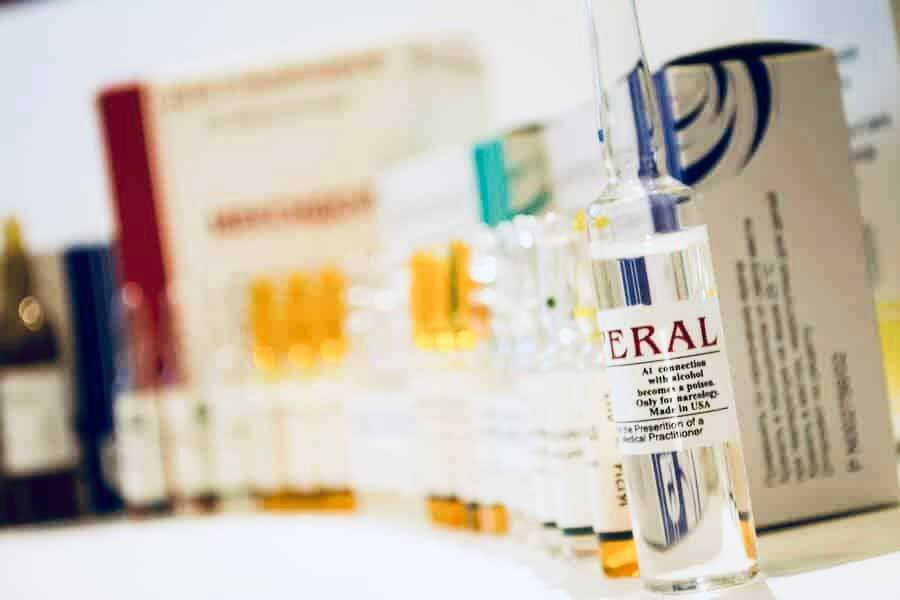

+380(97) 369 76
65
+380(97) 369 76
65Кодирование от алкоголизма Эспераль
Эспераль - современный подход к лечению алкоголизма
Работаем в Одессе, Киеве, Львове, Харькове, Днепре, Запорожье, Черноморске, Каменском


Бесплатная консультация, работаем круглосуточно 24/7
Эспераль - современный подход к лечению алкоголизма
Работаем в Одессе, Киеве, Львове, Харькове, Днепре, Запорожье, Черноморске, Каменском
Инъекционный Эспераль - это современный лекарственный препарат , который используют Украинские и Европейские врачи наркологи для кодирования от алкогольной зависимости на любой из стадий заболевания. Кодирование с помощью укола Эспераля - имеет пройденные клинические исследования и входит в европейские протоколы лечения алкогольной зависимости на территории Евросоюза. Украинская наркология полюбила Эспераль за очищенную формулу препарата в следствии чего воздействие после инъекции на печень минимальное в сравнении с дисульфирамом классическим. Препарат направлен на блокировку ферментов которые расщепляют ацетальдегид при употреблении какого либо алкоголя и вызывает сильнейший токсический эффект который сопровождается тяжелой интоксикацией и может привести к летальному исходу даже при минимальном употреблении спиртного. Стоит учесть что кодирование уколом Эспераля это один из главных методов кодирования от алкоголизма на второй стадии зависимости. Украинская наркология использует инъекцию Эспераля когда у пациента есть проблемы с печенью и им противопоказан классический дисульфирам, а так же когда есть патологическое влечение к спиртным напиткам и оно преобладает над здравым смыслом зависимого.
Одесские наркологи уже более десяти лет успешно лечат алкоголизм с помощью укола Эспераля , однако нужно понимать что вывод из запоя с последующей кодировкой с помощью укола Эспераля не является панацеей в лечении алкогольной зависимости так как кодирование это только временный метод “абсолютного запрета” на употребление спиртного . Зависимому пациента нужно пройти полный курс от детоксикации при алкогольной интоксикации до кодирование с последующей психотерапией которая поможет изменить ложные убеждения больного и сформировать отвращение к спиртным напиткам не только на физическом но и на психологическом уровне.
Эспераль имеет действующее вещество “дисульфирам” но он в отличии от классического дисульфирама имеет очищенную формулу и минимально влияет на печень. После кодирования с помощью укола Эспераль - идет блокировка переработки спирта в организме приводя к переизбытку продуктов распада ацетальдегида. Ацетальдегид очень токсическое вещество которое вызывает интоксикацию. В случаи если закодированный человек имеет даже самый минимальный срык , случайный или преднамеренный, произойдет реакция сильнейшей интоксикации которая может приводить к фатальным последствиям. Так же человек не может ощутить “приятно” опьянение , будет только мучительное отравление , страх и сильный тремор.
Главным показанием к кодированию с помощью укола Эспераль является:
Стоит отметить что кодирование от алкогольной зависимости является актуальным методом только когда другие способы лечения алкоголизма не дали нужный результат или же эффект был минимальный. На первых этапах в лечении алкогольной зависимости стоит рассмотреть таблетированное, инфузионное и психологическое лечение. Только когда эти методы не дают результат , показано кодирование от алкогольной зависимости.
Противопоказания к кодированию от алкогольной зависимости с помощью инъекции Эспераль:
Кодирование от алкоголизма с помощью укола является современным и практические безопасным методом в лечении алкогольной зависимости , самое важное перед кодирование от алкоголизма - это создать у пациента сильную мотивацию а так же выработать желание к полному избавлению и излечению от алкогольной зависимости. В процессе кодирование у пациента должно возникнуть психологическое и физическое отвращение к любым спиртным напиткам с последующим избавлением от патологической тяги (влечения) к любому алкоголю. Стоит понимать что укол Эспераль не снижает патологическую тягу к выпивке на прямую воздействуя на рецепторы головного мозга , однако в следствии длительной трезвости из за кодировки у пациента самостоятельно понижается влечение к спиртному.
Если человек которого закодировали с помощью укола Эспераль выпьет спиртное у него начнется сильнейшая токсическая реакция ( по типу аллергической реакции ) которая будет сопровождается: Головной болью , головокружением , тошнотой , рвотой , сильным повышением артериального давления, ощущением сердцебиения, проблемы с дыхательной системой - вплоть до остановки дыхания , развитием кровохарканья , инфаркта или инсульта в следствии сильного гипертонического криза. Если такому пациенту вовремя не оказать экстренную медицинскую помощь , последствия для его здоровья могут быть фатальны.
Что бы закодироваться с помощью инъекции вам нужно проконсультироваться с врачом наркологом , сдать минимальное количество анализов для оценки общего состояния здоровья ( сердца , печени , почек ). Так же одним из главным этапов к подготовке к кодированию с помощью укола Эспераль является абсолютная трезвость не менее чем полных 5 дней до проведения укола. Так же перед кодированием от алкоголизма нельзя употреблять спиртные настойки , лекарственные средства на спирту или другие спиртные прекурсоры. В случаях если пациент длительно находился в запое - ему ставят курсом капельницу от алкогольной интоксикации для восстановления функции печени.
Эспераль препарат который появился впервые во Франции для специфической борьбы с алкогольной зависимостью. Препарат имеет сертифицированные проверки и входит в протоколы лечения алкогольной зависимости на территории Евросоюза. Действующее вещество - дисульфирам - которое оказалось очень успешным для создания длительной ремиссии и развития полного отвращения к любым спиртным напиткам у зависимого человека не только на физическом но и на психологическом уровне. Эспераль является одним из ключевых и распространенных методов в лечении алкоголизма , хотя существуют и новые современные подходы к терапии зависимых. Стоит отметить Эспераль остается на лидирующем первом месте в протоколах Украинских врачей.
Цена кодирования с помощью укола Эспераль в Одессе начинается от 5500 грн.
| Услуга | Цена |
|---|---|
| Лечение алкоголизма Одесса | От 1499 грн |
| Вывод из запоя Одесса | От 1499 грн |
| Вывод из запоя на дому Одесса | От 1699 грн |
| Капельница от алкоголя Одесса | От 1499 грн |
| Капельница от алкоголя на дому Одесса | От 1699 грн |
| Лечение пивного алкоголизма Одесса | От 1499 грн |
| Лечение женского алкоголизма Одесса | От 1499 грн |
| Кодирование от алкоголизма Одесса | От 3999 грн |
| Кодирование уколом Одесса | От 3999 грн |
| Кодирование от алкоголизма уколом Дисульфирам | От 3999 грн |
| Кодирование от алкоголизма уколом Эспераль | От 5500 грн |
| Подшивка от алкоголя Одесса | От 9999 грн |
| Кодирование по методу Довженко Одесса | От 14999 грн |
Главным отличием кодирования с помощью эспераля от классического дисульфирама это двойной метод введения препарата. Укол Эспераля вводится не только под лопатку но и в вену для достижения быстрого и сильного эффекта кодирования. Сам препарат хорошо переносится закодированными пациентами , имеет небольшой список побочных эффектов который часто люди перенесшие кодирование не замечают. Кодирование от алкоголизма с помощью Эспераль должно сопровождаться качественной психотерапией которая донесет мысль пациенту о вреде алкоголя а так же с мотивирует его к трезвому образу жизни. К недостаткам метода можно отнести риски для здоровья зависимого - очень важно соблюдать трезвость ведь срыв может привести до тяжелых последствий для здоровья. Соблюдение диеты - нельзя пить квас , принимать конфеты с ликером - это может в меньшей степени но привести к сильной токсической реакции.
Эспераль выпускается в виде таблеток. Применяются для лечения алкогольной зависимости , препарат назначается на постоянной основе до момента формирования полного отвращения к спиртному.
Это хирургический метод лечения алкогольной зависимости суть которого заключается введении импланта через небольшой разрез под местной анестезией.
Эспераль для кодирования от алкоголизма также может вводиться в виде инъекций:
Инъекция проводиться внутримышечно и внутривенно.
Препарат Эспераль для кодирования от алкогольной зависимости рекомендуется вводить раз в 10-12 месяцев на протяжении 3-5 лет для достижения полного подавления тяги к любым спиртным напиткам с последующим формированием отвращения на физиологическом уровне. Помните что чем дольше пациент находиться в состоянии трезвости тем более адекватный и благоприятный прогноз на последующую длительную ремиссию и качественное излечение алкоголизма. Наркологи UmbrellaPlus “Безопасная наркология” рекомендуют кроме кодирования от алкогольной зависимости пройти курс психотерапии , ведь закодированного пациента лишили его главного увлечения в жизни и нередко пациенты которые прошли кодировку от алкогольной зависимости не знают что делать с этой трезвостью и часто срываются в конеце срока кодирования.
Любой врач нарколог ответит вам что лечение алкоголизма должно быть комплексное и проходить три стадии выздоровления. Только так удается добиться высокой эффективности и длительной ремиссии при лечении алкогольной зависимости.
На данный момент самый проверенный препарат для лечения алкогольной зависимости является Эспераль , он один из самых любимых лекарственных средств врачей наркологов при оказании помощи зависимому пациенту на любой стадии алкогольной зависимости. Мы его широко используем как препарат выбора при первом кодировании от пагубной привычки , ведь главным плюсом такого метода в лечении алкогольной зависимости это щадящие влияние на печень которая как правило у зависимых людей не всегда в порядке. Что бы закодироваться уколом в Одессе или в Черноморске вам нужно позвонить по номеру 050-021-69-57 и получить бесплатную консультацию дежурного врача нарколога.
На данный момент в Одессе UmbrellaPlus “Безопасная наркология” использует два вида препаратов для кодировании от алкоголизма с помощью укола:
Кодирование уколом - это самый безопасный и золотой стандарт при лечении любой формы алкоголизма . Высокая эффективность при создании длительной ремиссии и сильного отвращения к спиртным напиткам позволяет назвать его одним из самых лучших методов специфического лечения алкогольной зависимости. Такой метод широко используют в Украине в частности и в Одессе доктора медицинской службы UmbrellaPlus " Безопасная наркология".
Укол от алкоголизма под лопатку - такой метод кодирования от алкогольной зависимости появился недавно но уже приобрел свою популярность в Европейской и Украинской наркологии. Такой метод при лечении алкоголизма позволяет добиться длительной ремиссии в следствии полной блокировки распада алкогольдегидрогеназы с последующим концентрированием ацетальдегида в крови. Главные лекарственные средства при кодирование от алкоголизма под лопатку это - дисульфирам и Эспераль. Процедура кодирования с помощью инъекции под лопатку проходит с целью сформировать у зависимого пациента ощущение аверсии к любому спиртному напитку. Стоит трезво осознавать что кодировка не является панацеей для зависимого человека и требует обязательной корректировки для сформирования длительной трезвости.
Горячий укол от алкогольной зависимости - это народное название которое сформировалась в следствии специфического ощущения жара по всему организму при кодирование от алкогольной зависимости с помощью внутривенной инъекции. Горячий укол от алкогольной зависимости проводят в два этапа что бы ускорить процесс насыщения препаратом и усилить его эффект. Первый этап - это введение зависимому пациенту инъекции дисульфирама под лопатку , второй этап - это введение дисульфирамо-подобного вещества внутривенно. Такой модифицированный способ кодирования от алкогольной зависимости приобрел народное название “горячий укол от алкоголизма”.
Что бы закодирвоаться от алкоголизма с помощью укола в Одессе вам нужно обратиться в Наркологию UmbrellaPlus. Процедура кодирования проходит в течении 30-60 минут. Первое что происходит это консультация и письменное согласие на прохождение специфического лечения от алкогольной зависимости ( кодировка от алкоголизма ). Проводиться инъекция выбранного препарата пациенту после чего выдается справка от прохождении лечения. UmbrellaPlus “Безопасная наркология” работает только с проверенными препаратами зарубежных производителей. Что бы проконсультироваться с врачом наркологом позвоните по номеру 050-021-69-57.
Анонимно

"Дуже довго не міг самостійно позбавитися залежності, тому зважився на підшивку. Процедура пройшла успішно, і з того часу я навіть не думаю про спиртне. Страх перед можливими наслідками допомагає триматися на плаву, а підтримка фахівців – величезна підмога у цьому нелегкому шляху. Центр надає як фізичну, а й моральну допомогу. Вдячний їм за другий шанс."
Анонимно
"Решила сделать укол от алкоголизма по рекомендации подруги, которая проходила эту процедуру в этом же центре. Я сомневалась, но врачи всё объяснили, успокоили. После укола не чувствую тяги к алкоголю, хотя раньше сложно было представить день без выпивки. Сейчас наслаждаюсь трезвостью, чувствую себя намного лучше."
Анонимно
"Я никогда не думал, что психологическое воздействие может настолько сильно повлиять на мою жизнь. Врач помог осознать всю серьезность ситуации, и теперь алкоголь не вызывает у меня никакого интереса. Процедура безопасна и эффективна, рекомендую тем, кто хочет по-настоящему изменить свою жизнь."
Анонимно
"Я прошла кодирование гипнозом, и это было удивительное переживание. Во время сеанса я почувствовала глубокое расслабление, а потом – будто внутри что-то изменилось. Сейчас я свободна от алкоголя и наслаждаюсь этим состоянием. Благодарю центр за профессионализм и заботу! Отдельная благодарность Станиславу Вячеславовичу"
Анонимно
"Чесно кажучи, боявся рецидиву, але з процедури минуло півроку, і я навіть не думаю про випивку. Життя почало змінюватися на краще. Дякуємо лікарям за підтримку та мотивацію!"
Анонимно
"Після багаторічної боротьби із залежністю вирішила звернутись в клінку. Спочатку переживала, але лікарі дуже докладно розповіли про процес та можливі наслідки. Зараз я не п'ю вже 8 місяців і почуваюся чудово. Я така щаслива, що знайшла цей центр і знайшла контроль над своїм життям."
Анонимно
"Метод Долженко казался мне странным, но я решил попробовать. Оказалось, что это не просто кодировка, а глубокая работа с психикой. Это позволило мне кардинально изменить отношение к алкоголю. Уже год я не пью, и не планирую возвращаться к прежней жизни. Простое человеческое спасибо!"
Анонимно
"Гипноз помог мне избавиться от постоянной тяги к алкоголю. После сеансов я заметила, что стала спокойнее и увереннее в себе. Теперь алкоголь меня больше не интересует. Центр мне очень помог, и я благодарна за их заботу и поддержку."
Приезд в течении 60 минут от момента поступления заявки
Наши филиалы есть во всех больших городах Украины.
Мы оказываем профессиональную доказательную медицинскую помощь. Гарантией является наше имя.
Номер телефона:
+380 (97) 369 76 65
+380 (50) 021 69 57
Адрес главного офиса: г. Харьков ул. Сумская 47
Офис вашего города нужно
уточнить
Работаем в: Одессе, Киеве, Львове, Харькове, Днепре,
Запорожье
Telegram: t.me/umbrellaplus
График работы: Круглосуточно